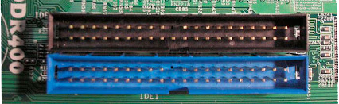

Conector IDE
El cable IDE permitía conectar el disco duro a la placa base de forma directa mediante su cable de cinta. Podíamos
encontrar cables de 34 pines y de 40 pines, los cuales alcanzaban una transferencia de datos de 133 Mbps o 100 Mbps
como máximo. El puerto o conector IDE de la placa base solía ser azul.

volver a la placa madre